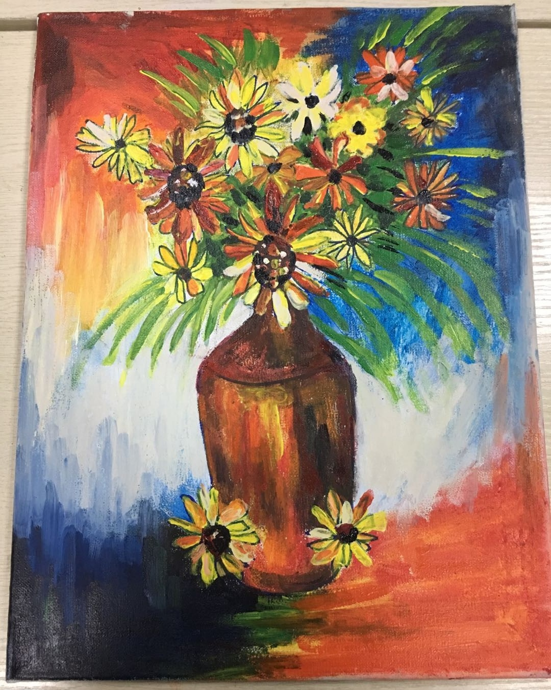
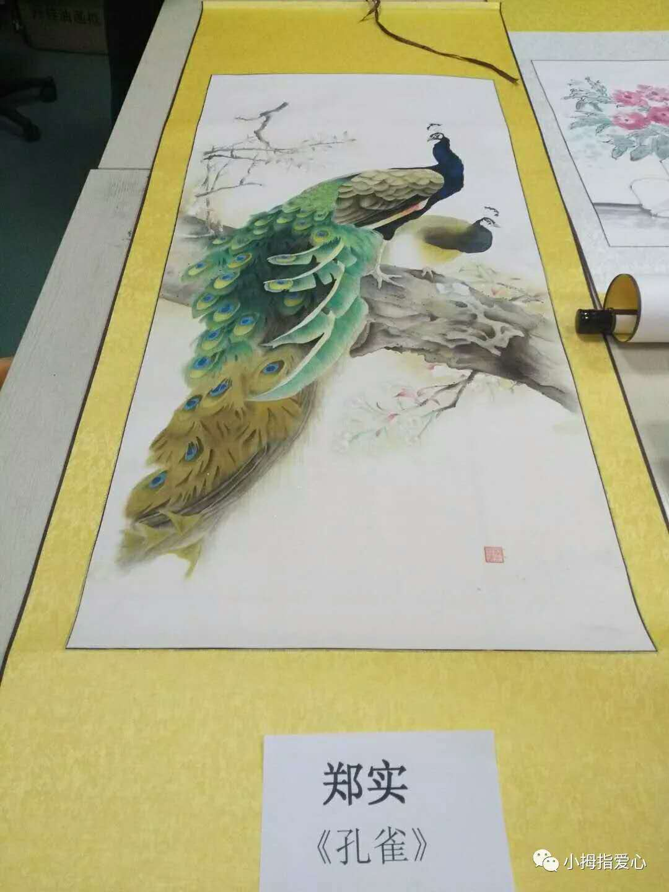
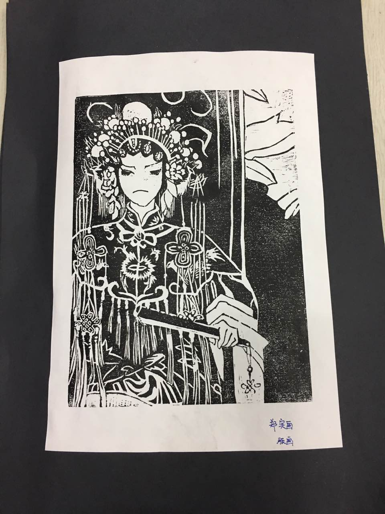
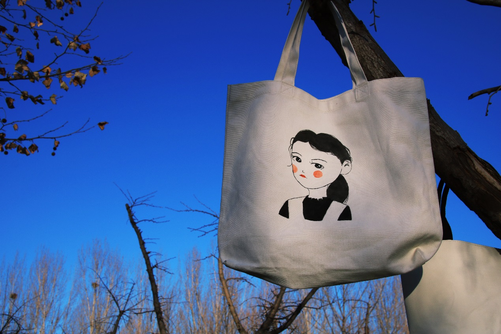
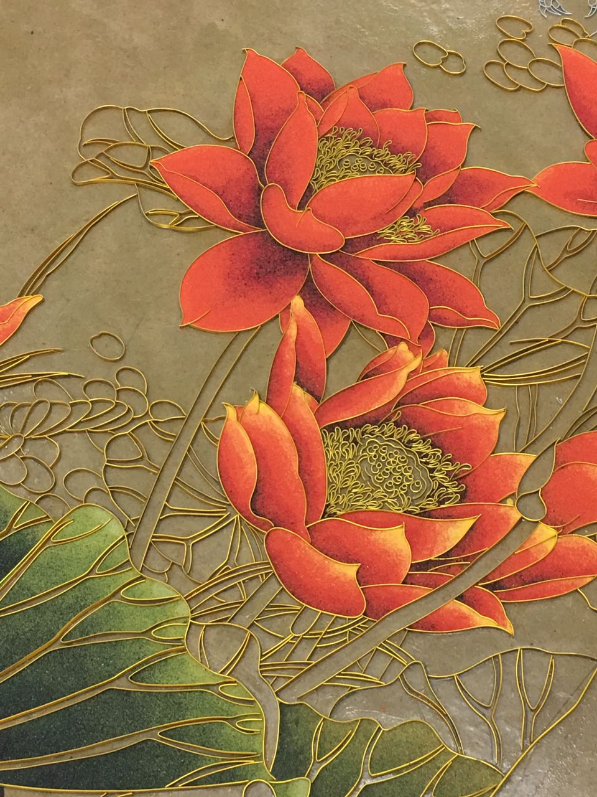
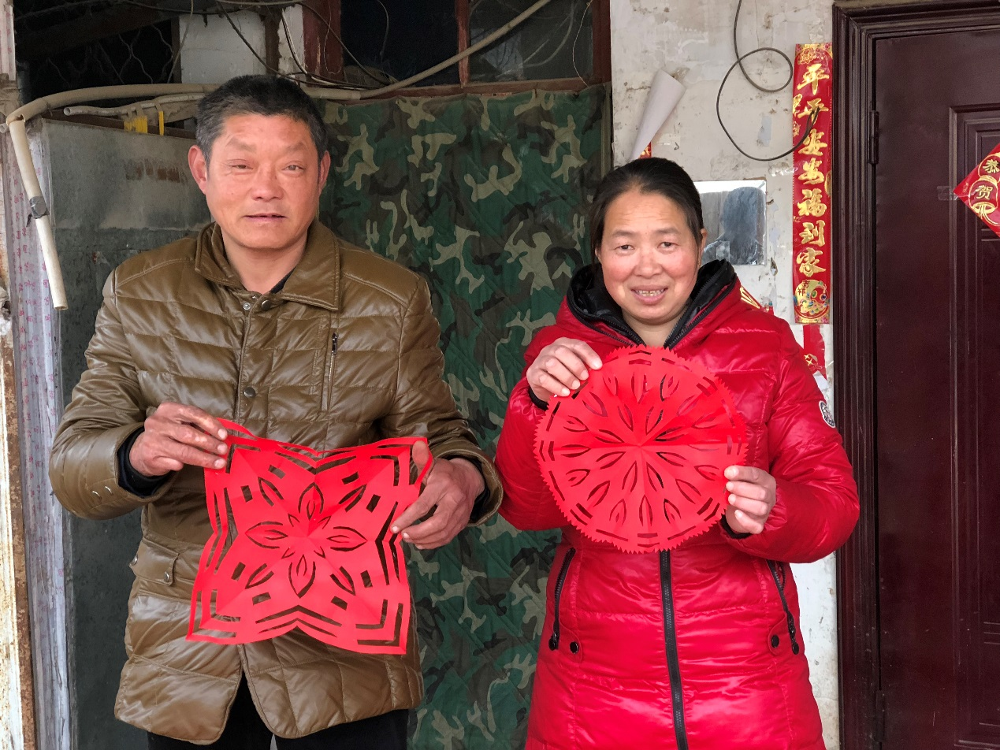
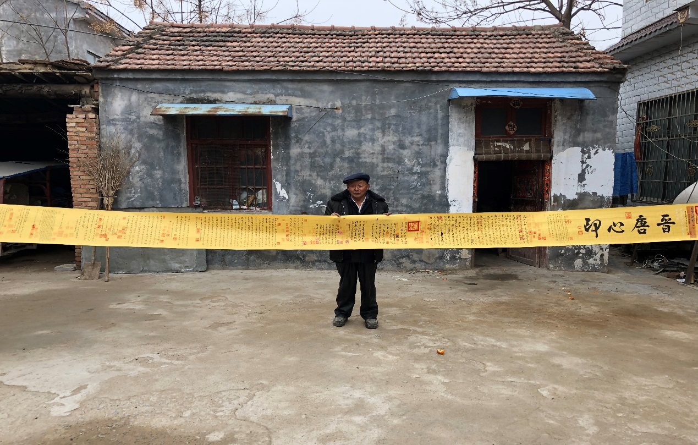
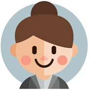
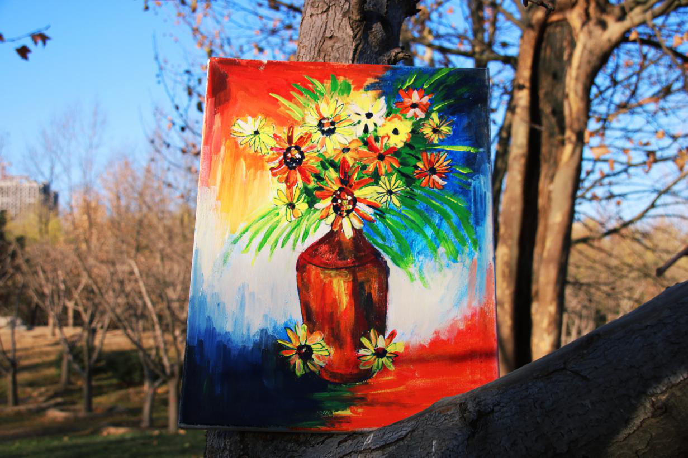
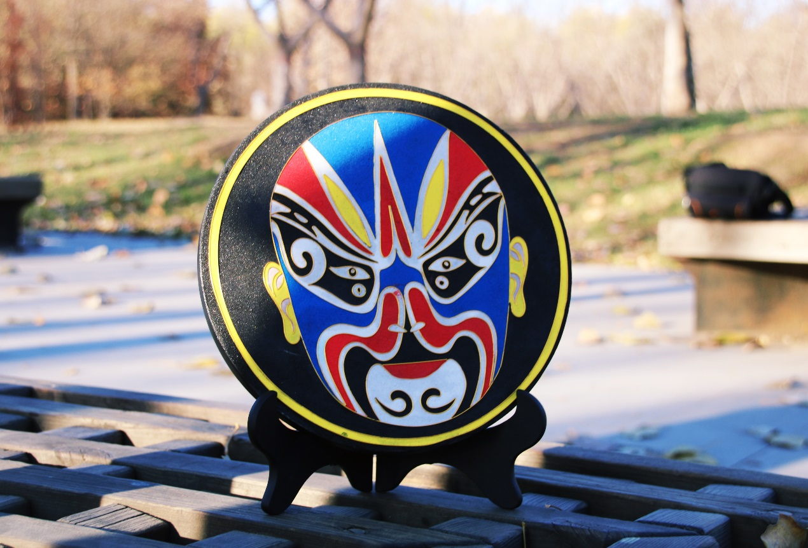

关于我们
我们秉承着“广泛参与、造血式公益和能力塑造”的理念，致力于为“小拇指”们获取更多的经济利益和精神慰藉。以公益的角度出发，将一贯的公益心不断发扬光大，并与所有的公益慈善组织一起努力，提高社会大众的公益意识。
“小拇指们”
“小拇指们”是我们的爱心帮扶对象。他们也许是因先天或后天因素而陷入困境，他们的家庭因缺乏必要的支持和帮助逐渐陷入贫困和危机，但却对生活充满希望。
产品来源
我们平台的产品主要来自于社会上有才艺的“小拇指们”，无论是儿童、老人、残疾人；无论是身体上或是心理上的因素而导致的贫困；不管才艺形式，无论才艺大小，都可以给我们的“云平台”提供作品。
“造血式”项目
我们平台不仅帮助有能力的“小拇指”们获得经济来源，而且对于尚且没有特长的人群进行“再培训”能力建设，帮助他们争取早日通过自己的双手实现人生价值。
拇指作品







团队组成

网络技术部
“负责微信公众号以及网页的日常维护，掌握产品新动态并及时上传；及时收取爱心人士的反馈，接听热线等。”
信息部
“收集小拇指信息，并进行筛选，把有价值的信息交与产品部，一边及时收取小拇指作品等。”
产品部
“负责了解小拇指作品的类别及市场需求、小拇指们的再培训活动；定期组织捐赠，展览等其他相关活动。”
财务部
“负责定期盘点线上交易所得，并把小拇指应得的部分及时送达他们手中。财务透明，让大家的爱落到实处。”
优秀作品
我们将定期更新小拇指们的优秀产品，敬请期待哦

自闭症儿童画作《绽放》
这幅油画作品是郑州市儿童福利院的绘画作品《绽放》。大大的花瓶里装满了盛放的花朵，朵朵向阳，肆意盛放，就像小作者一样努力向上，找寻着生命中的灿烂阳光。油画的作者是一名自闭症儿童，由于与生俱来的生理缺陷，使得自闭症儿童相对弱小又带有边缘化的特征。然而，这些星星的孩子作为一类独特的社会弱势群体，也同样具有其融入社会、享受生活的权利。在福利院开设的美术课堂上，小飞都表现出不同于以往的专注和乖巧，认真领会老师的指导，福利院的老师们逐渐发现他对于绘画的热爱和天赋，慢慢培养小飞用手中的画笔表达内心的足迹。

脸谱掐丝活性炭盘净化空气
景泰蓝活性掐丝碳盘是“景泰蓝镶嵌工艺+活性炭炭盘”二者组合的产物，一种是净化空气用的活性炭炭盘，一种是中国传统的景泰蓝镶嵌工艺的现代延伸，传统文化与现代环保产品的有机组合成一种既有美化环境又有净化室内空气的双重功效的新品！景泰蓝活性炭盘，在活性炭炭盘上进行艺术加工，结合其它材质制作出各种装饰性的活性炭装饰画，借鉴了传统的景泰蓝工艺，独创出以活性炭盘为基材，在活性炭炭板上掐丝、点蓝，以黄灿灿的金属丝来表现各种图案轮廓，以名贵的釉料、玉石、宝石等作为画面的色彩，再辅以各种手法而纯手工制作成各种装饰炭画。
宁陵县孔集乡书画老人六米书法作品
书法是中国及深受中国文化影响过的周边国家和地区特有的一种文字美的艺术表现形式。“中国书法”，是中国汉字特有的一种传统艺术。
此书法作品全长5.5米，写的是王羲之的《兰亭序》，已经精心装裱。这幅作品出自一位贫困老人之手。这幅字是老人最得意的作品之一，全长有五六米，一点一滴写满了老人的不易。这幅字可以说非常出彩，老人说他写这幅字用了一个月的时间，因为这卷纸的价钱，对于老人来说不是那么容易支付的，所以他生怕浪费了这卷纸。一个只上过三年学的七旬老人，一笔一划的写出了王羲之的《兰亭序》。
特别感谢
“小拇指爱心项目”在走访调研中，受到了多方的大力支持和指导，在此特别鸣谢。
郑州市社会福利院
郑州市儿童福利院
馨嘉苑社工
比邻社工
慈善总会
德艺慈善